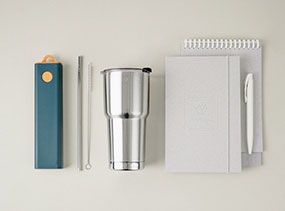
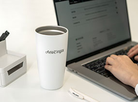
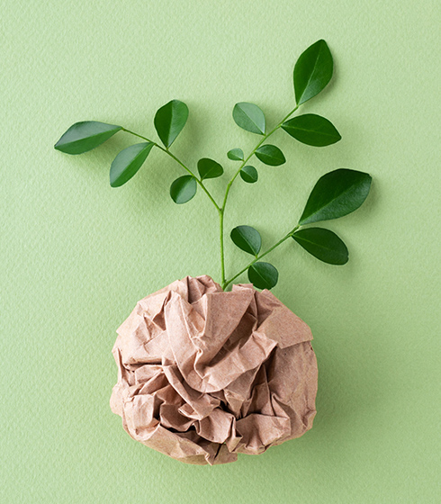
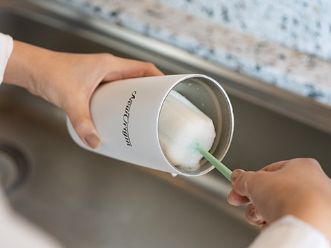
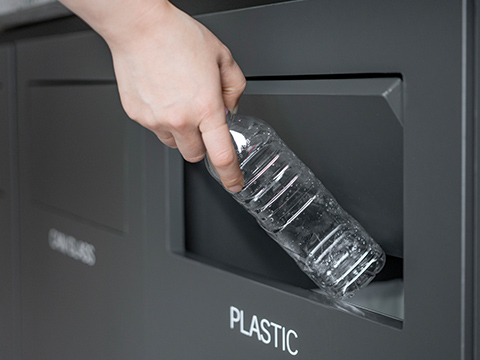

보고를 위한 종이 사용. 꼭 필요할까요?
유한건강생활의 모든 보고는 종이 출력이 아닌
온라인으로 진행합니다. 그렇게 우리는 1년에 최소
35그루의 나무를 살리기 위한 노력을 합니다.
유한건강생활은 창립일부터 다짐합니다.
지구를 지키기 위해,
작지만 하나씩
차근차근
노력하겠습니다.
지구를 지키기 위해,
작지만 하나씩
차근차근
노력하겠습니다.
노 플라스틱 캠페인
직장인 하루 평균 커피(음료) 섭취 2잔 이상으로
가정할 때, 우리는 얼마나 많은 플라스틱 컵 사용을
누적하고 있는 걸까요?
유한건강생활에서는 사내 플라스틱 사용을 금지합니다.
사무실에서부터 작지만 천천히 지구를 위한
지속가능 환경에 동참하겠습니다.


- 하루 커피
- 2잔,
- 절약한 플라스틱 컵
- 36만개 이상
- 감소한 이산화탄소
- 약 19t

종이 없는 보고
임직원 166명 기준 하루 5장 지면 보고서 작성
A4용지 1,000장 = 나무 1그루
노플라스틱 캠페인
-

01. 텀블러 세척유한건강생활 임직원이라면 대표이사부터
사원까지 오피스에서 만큼은 모두가 한마음으로
일회용 컵이 아닌 텀블러를 사용해 플라스틱
쓰레기를 줄이는데 동참합니다.
매일 아침 출근 후 자리에 있는 텀블러를 들고
줄을 서 차례대로 텀블러를 세척합니다. -

02. 분리수거재활용을 잘 하고 있다는 것은 우리의 착각입니다.
올바른 분리배출부터 재활용은 시작됩니다.
분리배출 전 잔여물이 남아있으면 일반 쓰레기로
분류되어 제대로 재활용 될 수 없습니다.
사무실 곳곳에 분리배출 통을 비치하고
개수대를 설치해 모두가 올바른 분리배출을
습관화 할 수 있게 합니다.
해양 생태계를
파괴하지 않는 오메가3
파괴하지 않는 오메가3
해양 생태계의 먹이사슬을 지키기 위해 어류를 통한
동물성 오메가3는 배제합니다.
동물성 오메가3는 배제합니다.
먹이사슬의 최하단에 위치한 미세조류를 가지고 와 직접 배양해 만든 식물성 오메가3는 중금속 이슈에서 안전할 뿐만 아니라 멸치, 고등어와 같은 수많은 어류를 살릴 수 있습니다. 특히 이산화탄소를 저장하는 고래를 지키기 위해 고래의 주식인 멸치, 정어리, 크릴과 같은 어류를 포획하지 않습니다. 우리는 어류를 대체하면서도 인간에게 더 이로운 원료를 연구하고 찾습니다.
친환경 작물 대마의
무궁무진한 가능성
무궁무진한 가능성
대마(HEMP)는 세계에서 가장 빨리 자라는 식물 중 하나로
탄소를 흡수하는데 나무보다 약 2배 더 효과적이라고
알려져 있습니다.
탄소를 흡수하는데 나무보다 약 2배 더 효과적이라고
알려져 있습니다.
대마는 친환경 작물로서 1헥타르(10,000 ㎡) 넓이의 대마는 연간 이산화탄소 8~22톤을 흡수하는 것으로 확인됩니다. 아직 국내에서는 헴프의 꽃과 잎에 함유된 CBD의 사용이 규제되고 있지만 성숙한 줄기, 뿌리, 종자까지 버릴 것 없이 유용한 식물입니다. 유한건강생활에서는 천연물 헴프의 무궁무진한 가능성을 발견하는 것은 물론 환경을 생각하는 지속가능한 자연 유래 원료로서 이를 활용한 원료를 개발해 제품생산에 활용합니다.